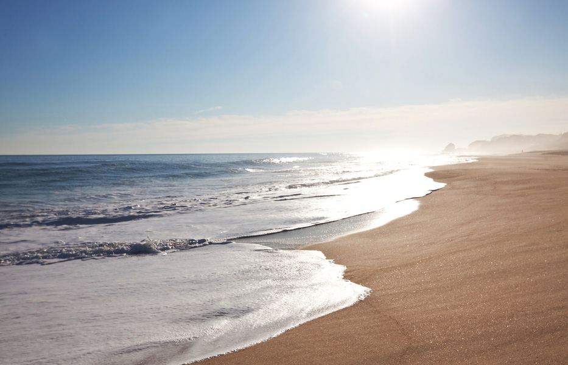

Priroda
The sea in a general sense refers to the ocean or world ocean, the body of salty water that covers approximately 71% of the Earth's surface. Used in a particular sense the word sea refers to particular seas either as second-order sections of the ocean, such as the Mediterranean Sea,

Cvijeće
The common sunflower (Helianthus annuus) is a large annual forb of the genus Helianthus. It is commonly grown as a crop for its edible oily seeds. Apart from cooking oil production, it is also used as livestock forage (as a meal or a silage plant), as bird food, in some industrial applications, and as an ornamental in domestic gardens. Wild H. annuus is a widely branched annual plant with many flower heads.

Planine
Sedam glavnih dijelova, ili ploča, koji tvore Zemljinu koru, guraju se preko Zemljine kugle brzinom rasta nokta, ali silom koju ljudski um ne može pojmiti. Svaka od njih predstavlja kontinent ili ocean. Budući da Zemljine ploče neprekidno plove planetom stalno udaraju jedna o drugu.

Zgrade
Zgrade mogu biti različitih vrsta i namjena - od složenih kompleksa kao što su bolnice, dvorane, kuće ili stambene zgrade. U zgradi se može regulirati temperatura, svjetlo, dotok zraka ili putevi kretanja ljudi.

Ceste
Cesta je svaka javna prometnica, ulice u naselju i nerazvrstane ceste na kojima se obavlja promet.

Šume
Šuma je životna zajednica drveća, grmlja i šumskih životinja. Smatra se savršenom ekološkom tvornicom, ali i idealnim staništem za brojni živi svijet i blagodat za čovjeka. Šume se razlikuju s obzirom na klimu, vrstu tla i reljef.